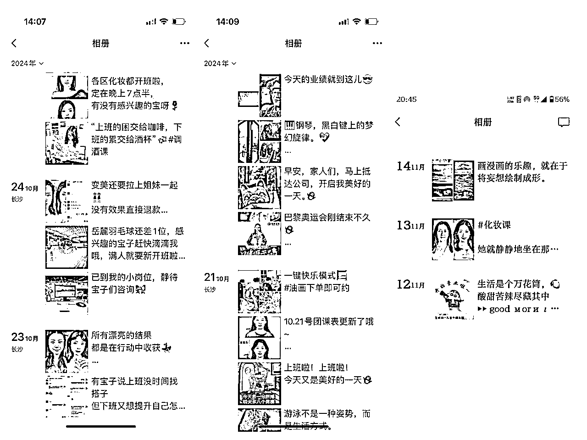

来源：https://c2z3ysmn07.feishu.cn/docx/B0DedJMh4onXE6xzUdicNH0AnWh
各位圈友们好，我是饮茶（老陈），生财的第8期新圈友；
特别幸运的是，我在第一期夜校航海活动中抢到了名额，还顺利通过了生财的筛选，由此得以深度参与这次为期一个月的生财线下航海同城夜校项目。借着双十一的风口，我和航海的船员们还一起收获了很大一波流量红利～
这次航海实战是从十月中旬一直持续到十一月中旬。我们主要是在小红书、视频号、抖音做素人号，负责引流+转化，引导学员加私域进行转化下单上课，由合作商家交付完成售后，项目实操性高，难度不大，想做的圈友们可以一起交流交流；
曾经作为设计狗，受《交换空间》《艺术创想》的影响，我和发小一同选择了环境设计专业；
毕业后一路做到独立设计师并开了工作室。然而，如今房地产行业的落寞，连带我们设计相关行业也走下坡路，工作室进展缓慢，这让我陷入了迷茫，老是想是否要转换赛道，去寻找新的发展机会。
我家一直从事墨西哥和菲律宾五金配件出境的传统外贸生意，推广方式主要是面对面的线下展会等。但疫情冲击下，全球经济受挫，境内外线下展会几乎全取消，传统外贸渠道受阻。
那时我凭借嗅觉想到了线上销售，通过朋友了解到生财内的一些信息，还在21年底去菲律宾旅游带回不少相关信息，本想接手家里生意开展线上业务，可家里觉得我年纪小，未让我接手，我也不愿只做个螺丝钉，便继续做设计师。
我是“传统销售”出身，擅长线下社交，每次湖南群的组局我都积极参加。
年初组局时我们讨论到同城流量机会，我便和小伙伴组建了搭子群、读书会、爬山群、相亲群等社群，虽因经验不足运营效果一般，但也积累了一定的同城业务经验。
到了国庆临近年底，又一次组局提到同城医美的项目，经过多次交流，我发现能对接自己的客户资源，这让我对同城项目更加关注。
恰好在这个时候，教练团队的“同城夜校项目”对外发布。一方面，前面在同城业务上的种种尝试让我对同城相关项目有了兴趣和一定经验，我觉得这个夜校项目可能是进一步拓展同城业务的好机会；另一方面，两位铁杆朋友也极力建议我参与试水。
虽然当时大家对此项目意见不一，有人看好，有人持观望态度，但综合考虑自身当下的职业困境、过往在不同业务模式中的经历以及朋友的建议，我决定参与其中，希望能通过这个项目找到新的发展方向，突破目前的事业瓶颈。
分享给一个血泪弯路：以后听话照做，别瞎折腾；
设计师的老毛病：图文可以模版出，我忍。。。。但是不能允许自己的作品太丑；
但是！！！！爆款真的不如你所想的那样；请记住：听话照做；
开始都以为："小红书女性用户偏多，应该图片越精美越有浏览量和点赞量吧"，结果得到的全是收藏量，无评论无点赞无私信.......（我要它何用😭）看看我的帖子和清华哥帖子的反馈，惨不忍睹.........
和同伴、教练多沟通后得来：图文文案具有争议性、图片的对比度大、展示点足够突出等，这样才能得到更高的曝光率；（用户思维：你打开小红书页面，是否能在那么多帖子中一眼就被看到？）
实操开始，同城的项目都是主打私域成交，夜校也是【引流-转化-下单-售后】
这个项目不打废号流，每个账号都需要养号养数据，保证"一机一卡一号"；如果是异地账号，可以用改定位软件操作发帖；
1、以图文为主，新账号最开始可以紧跟当时热点，发布"易建联"、"甄嬛传"、"饮料分享"等互动贴，检测账号是否流量正常，同步拉高账号的权重；
后期如果数据不正常，也可以时不时来一条唤起数据；要知道我们一般小红书不火的时候，帖子眼睛都只有二三十个👀
2、模仿爆款内容，改MD5数值，改底色，AI改文案，批量发布；
使用软件：【美图秀秀】【PS自动化】【WPS演示 】【可画】
3、在笔记、粉丝有少量的数据后，可以正式安排小红书的帐号了：
（点开置顶领最新课表进❤️裙，所有课程都是 500）
更新：所有账号每日三更（可发1篇第三人称贴，2篇课表）
按照固定模板替换素材后出新视频（直接右键点击视频段，点击替换素材，3分钟出一个视频，半个小时搞定3天视频），每天日更3篇/号；
剪视频看着简单，但其实是很多伙伴的一个卡点，前期半个月，我们有很多伙伴一天大半的时间都用在剪辑、作图上面；第一天开工，原本我预计以为第一天可以走完整个交付sop，但我们第一天都在教学剪辑；
对很多人而言，生财这个社群就是体现在打破信息的壁垒，软件的操作也是一部分；
"知识的诅咒"：了解了某种知识的人不清楚为什么别人不了解；不了解这个知识的人就更加不知道了解的人了解啥了；
时间过得很快，后面团队很多人都有些消极，一天苦干十二个小时，全在剪视频做图发文，而且那时候都不怎么开单，还要不停解决不下单客户的各种情绪，安抚群内随时有的"暴动".......
经过长久的耗神耗力，后来迎来一束亮光：叶落影的自动化剪辑！会程序在这个年代真的是王炸啊！帮整个团队提速了很多倍；打call🥁🥁
抖音发布可以在剪映剪完后同时发布，记得更改标题和地址，还可以同步关联一下近期的热点；
下载爱加速3天免费，一个月十几块钱；
需要数据线连接电脑和iphone，电脑端下载爱思助手，再从电脑爱思助手给iPhone端下载“爱思”；
打开iPhone的"隐私与安全性"-"分析与改进"-打开"与开发者共享"；
在电脑改定位后拔掉数据线，如果后续要恢复真实地址，可以重新连数据线或者iPhone重启；
同Windows端爱加速会员使用；
往常是走面销的、高客单价的伙伴们，注意❕❕
互联网销售的逻辑跟我们往常面销不太一样，面销前期品牌、产品只是吸引的一部分，后期的温暖沟通、问询、对症下药是成单的重点；
但是！！互联网的客户没有忠诚度，你不能奢求像在店面销售一样，他能在看完你的产品还能在店面停留，人至少在你手里；互联网客户跑路速度快到你无法想象，这时候常规言语逼单通常无效；
所以后面我们奉承一个"只吸引不骚扰"的宗旨，也省去了很多我们的交流成本，只要你给出实际能吸引到ta的就好了，比如"价格优惠"、"时间自由"、"地区便利"、"确实有羊毛可以薅"等等........
前期选定30个客户，全面细节的做好沟通，与客户沟通会遇到的问题，全部罗列给你自己的客服宝形成自己的话术库，后面你再也不用一个字一个字的敲了；
产品介绍完毕、夸夸完毕，下单交给客户就好了，记住：用户量够大，话术不劈叉，下单不会差；
第1步：建立信任感；
发发你的生活，你的爱好，你也有独属于自己的空间，这样聊天的时候，你跟客户对话自己的爱好和玩笑都能更有底气；
第2步：刺激需求；
有一句人性密码：人是因为痛苦才改变的。
朋友圈种草文案的万能公式：用户痛点=产品种草+引导下单；
夜校客户不下单有好几个原因：远了、没课、看不到成效等等；那你就对着这几个点，狂发已经解决了的朋友圈，告诉他们就等他来上课了；

一句话：早开群，早释放双手；
在我们都默默狂聊客户的时候，桔子丢出一句："其实都不需要你怎么单回，把他们叫进群里，该发的课程、该注意的群里都有，试试群聊后你发现多了一堆莫名其妙的订单。"（还得是玩过的啊.......）
还有香菜教练的点子：试试一个小时更新一次群内容；借鉴一下小红书风花雪月的那些素材，可以提高效率、减少重复造轮子；
就让他们多接龙多自己聊天，正好碰上双十一，在群里发布优惠直接一次性讲清楚，来私聊直接下单的就很多了；
还可以互相在各自的群里安排上水军，客户的夸夸只需要一句，抵得上我们介绍极限拉扯半个月；
前期因为下单人数不够，商家也不够，所以开课难以成团，咨询退单的都不少；
及时回复、安抚客户、前期沟通的不承诺都很重要，自己日常也要看看还没交付的订单，三两天就日常问候一下ta，打打感情牌，让客户知道我们在意他，这样即使一直不开课，她为难你的程度也降低了许多；
不过成团这个问题在项目启动半个月左右，因为商家、客户基数已经够大，基本也解决了；
【丑话说在前头】在前期跟商家沟通谈合作的时候，我们就会表明，如果是由于商家服务、内容、资质等问题导致客户退款的，上过的课可以结算（有些客户也会要求全退），后面不与结算+合作；
团队架构：【销售+商务】
商务老师负责沟通、签约商家，安排成团学员上课；
销售负责前端引流下单+售后处理；
资金准备：【设备+场地】
设备："拍机堂"400一台；
场地：独立作战无需场地，在家可执行；后续有员工可以租工位500/人/月；
目前夜校流量最大的竞争对手并不是同行，而是商家本身；对于商家而言，他亏本做的课程只能卖¥300，再加上合作中间环节的流量成本，首次合作后商家完全可以复制我们的模式，自行以299元开直播宣传和售卖。
深圳化妆圈便是典型案例，片区商家抱团形成了“化妆城”，抢占了流量高地。
就像教练们所说，单人做以后会越来越难，团队和品牌的力量加持，是能够长期站稳脚跟的必要方式；
现在我们看中的，不是夜校每个客户给我们带来的那一两百块钱利润，而是夜校的盘子起来以后精准同城粉的沉淀和运营；
以往同城粉被“线下人际”强的商家抱团垄断多年，这些圈定的客户群体能够稳定带来收益。疫情后，线上渠道崛起，为我们提供了打破传统格局、分流同城粉的机会。
放眼全国的同城，来看，同城流量具备极高的变现潜力，“一粉多重变现”成为可能。通过陪伴式运营，流量的持续性能够带动人群的"高留存"、"高裂变"和"高复购率"。
尤其是夜校的70%用户为女性群体，这部分消费力强的用户是夜校可深耕的核心价值。
现在女性向上蓬勃的需求相比更高，同城读书会群到线下参与人数，女性:男性=8:2；相亲群到线下参与人数，女性:男性=4:6；相亲机构提供场地，两场可以同时接龙办理；
女性群体一直是实体线下商家的香馍馍，消费完医美，月子中心也很馋这群人，再延续到少儿培训（K12教育、兴趣班等），构建完整的消费链条。
每个同城客户的活动范围都不止局限在本地，而是辐射周边。例如长沙的同城客户活动范围可延伸到"宁乡温泉"、"株洲方特"、"韶山风景名胜区"等，链接好周边的旅行社，朋友圈做好宣发，变现空间巨大；
虽然深圳"化妆城"这样的抱团案例并不多见，但许多实体商家还是对流量的运营能力把控不到位的，后续可以通过独家代理或代运营模式深度合作，帮助其提升转化能力。
高价值的商品销售，流量难以起来一直是个痛点，兜兜转转也找不到方法解决；
就在航海即将结束之际，与"简单哥"聊了一下，他分享了一篇来自做太空舱爆了的视频号，视频的逻辑是一样的，15秒的视频以6-7个场景切换，至于文案、文字大小、图片呈现、场景切换，圈友们可以用视频去分别测一下效果；
很开心，这里有一群实战能力超强的圈友。单打独斗时我们或许是“菜鸡”，但我们深知“三个臭皮匠顶一个诸葛亮”的道理，每天的讨论总能碰撞出解决方案。遇到刁钻的客户也好，流量多到忙不过来也罢，与其自己在那手忙脚乱，不如拉上三五个伙伴，一起上天台聊聊，打开新的思路和可能性。
以前，觉得流量运营是难以掌控的事情。但通过参与夜校航海，我逐渐打破心理障碍，开始亲身实践，真正沉淀出了从0到1的流量运营能力。这种能力将是未来所有商业模式的核心竞争力。
对于夜校的项目想做一些更详细了解的，教练团队有很详细的帖子，可以移步去以下的内容查看：
同步也有我们其他两位学员的经验帖可以更全面细节的了解：
阿钦的夜校干货讲解
桔子的流量成长之路https://articles.zsxq.com/id_s7qv6tcwgmr8.html
让我们有机会参与线下航海项目，能有机会一起生财有术；
一群人一起做一件事的力量真的很大，这次航海我们遇见的不只是同事，还有未来的合作伙伴，这30天每天都在给我灵感和助力，疲惫的时候一起打鸡血，迷茫的时候一起规划未来，我们肯定还有更多的故事，一起往前冲，我们还会在顶峰相见～
是教练团队的辛苦付出有了我们现在成果的坚实基础，还有香菜教练厚厚的销售手册；
含笑半步癫、北冰熊、阿音、小杨、小源、叶落影、简单、奶油、阿钦、桔子、桃桃、关关、咪咪、小埋、熊笑长、刘笑长、剑白、然然、lulu、星空、喵喵、伊亿姐姐、小富婆、鸿杰、艾迪、曾丽、小狮子、徐Ken、锦熙、晓晨，一起同行的30天我们都成长的很快～
同城流量的入局都是从大魔的引导开始哈哈哈，一天到晚给师傅不带停的电话和长篇大论，他的不厌其烦支撑了我对同城项目的探索和实践；
结交很多年关系最铁的伙伴，是他们推着我走了很远，也是他们引我参与的本次夜校航海，一切故事的发生都有两位伙伴的推进；